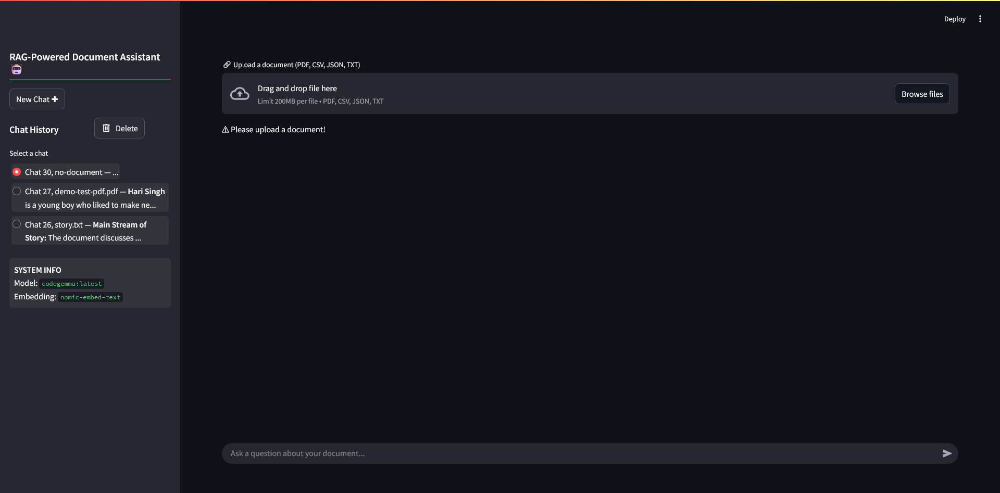
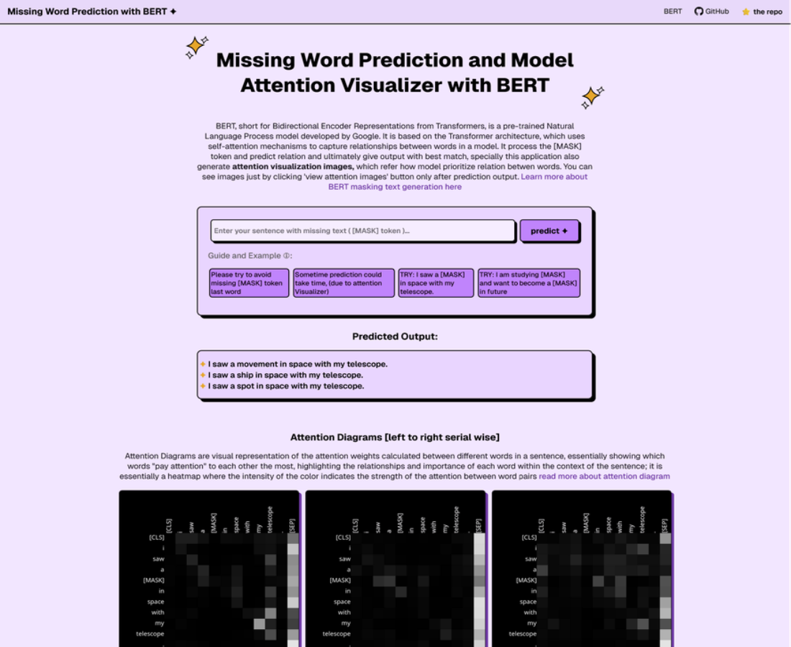
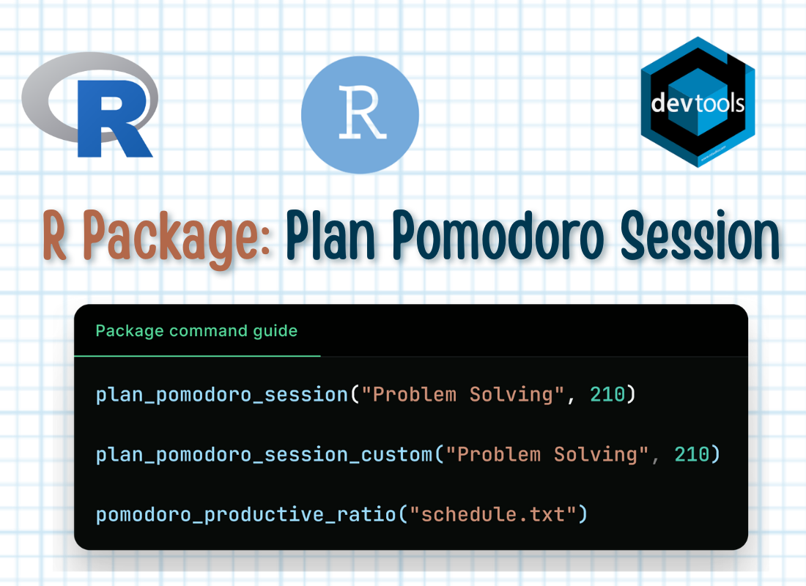
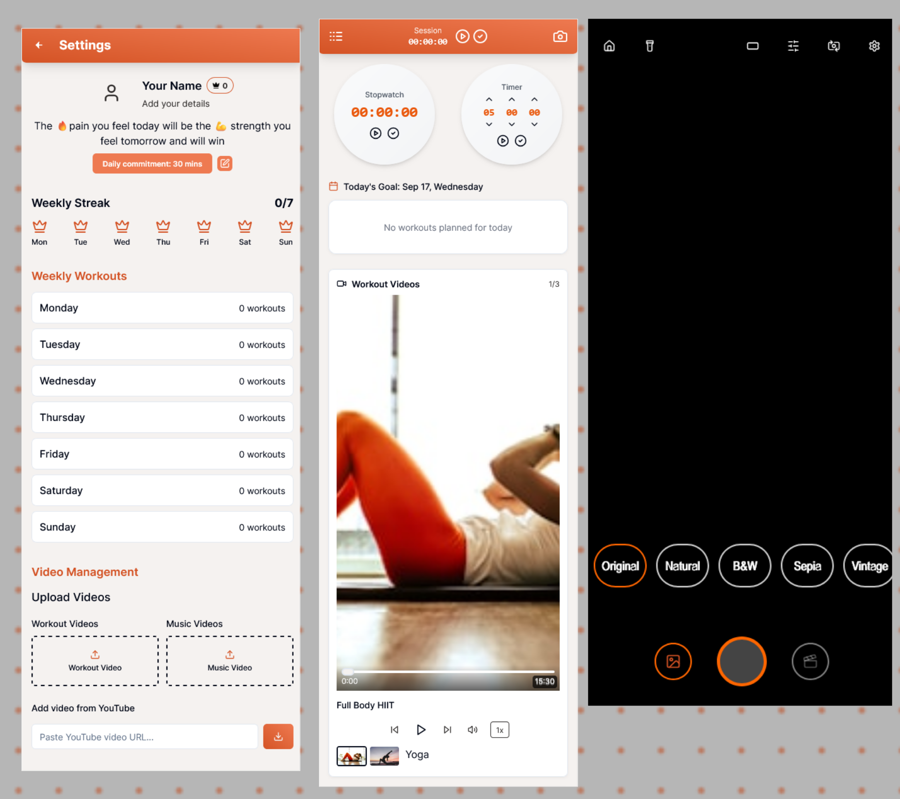
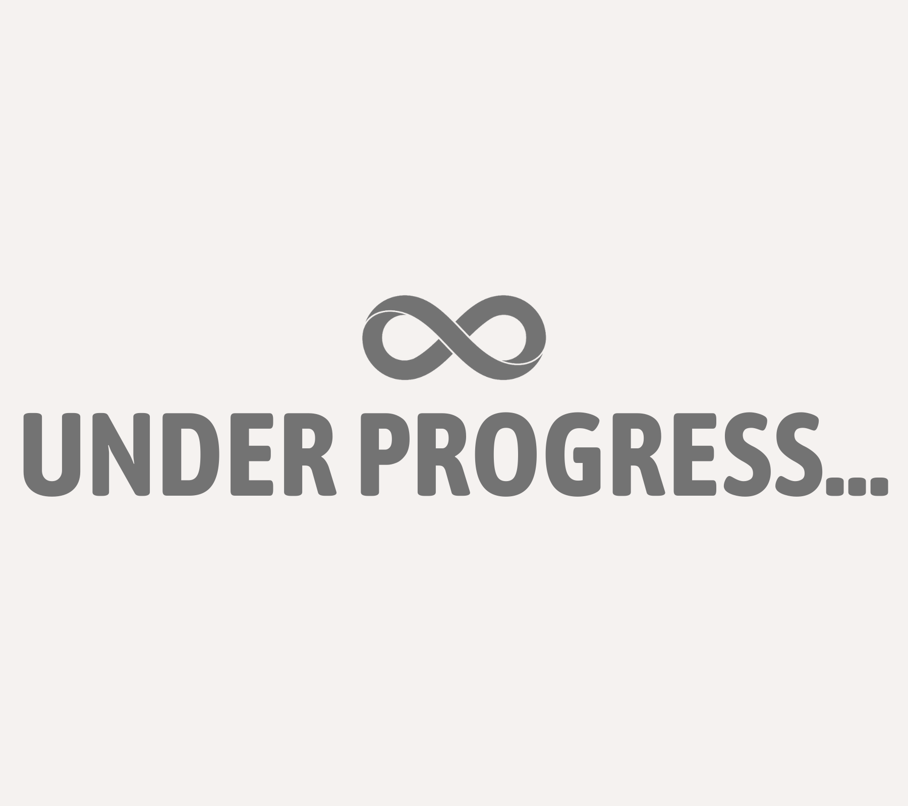

ADYA PRASAD
Specialising in ML/DL and passionate about data analysisABOUT ME
A dedicated computer science learner with a strong passion for machine learninga and deep learning. Looking to contribute to research and publish impactful work in AI/ML/DL, Over the past years, I have focused on self-learning and building projects that strengthen my foundations, while also searching for opportunities that provide rigorous research exposure and mentorship.I love networking with curious and business-minded people where I can learn new things and add some value
to them from my experiences.
What do I love to do? -> Backend development with Python, Machine
learning algorithms, and Web Designing
By heart, interested in the intersection of business, data analysis, and entrepreneurship
EXPERIENCES
Developer and web administrator at NowTreat (Healthcare)
2023 - present
- Collaborated with the founder, assisting staffs and marketing team to develop a patient-centric website, for ease of adaptability, used the Wordpress cms with a custom plugin for easy appointment booking, pre-/post-care guide.
- Build a patient feedback and assistance loop to seek feedback, provide treatment guidance, and improve patient engagement.
- With an optimised website and integrated feedback with marketing workflows, resulting in a 25% increase in clinic footfall through organic and paid digital marketing conversions
Freelance web and app developer
2021 - present
- Worked with local enterprises, proprietors, and small businesses to understand requirements, analyse market and competitor insights, and deliver tailored, researched data, e-commerce applications, web platforms, and automation solutions (using n8n) aligned with their vision.
- Successfully delivered 10+ projects, including: Rajeshwari Asha Enterprises (application for monitoring orders and throughput), Aditya Pathology (automated scheduling and customer notification system), Yatidhara [fmcg company]
- Learn to handle end-to-end development lifecycle across multiple concurrent projects, communication with the clients, and understood problem faced by small cities founder
Tutor at a private coaching institute
2019 - 2022
- Started as passinate home tutor and progressed to teaching at a computer training institute, my role was to guide students in building web application & Python programming.
- Guide students to prepare for tripleC and take their mock test.
TA of Fundamental of CA Subject for Freshers in College
2022 feb - 2022 may
- Assistant TA for freshers, in fundamentals of computer application (an extracurricular subject), contributed to quizzes and problem sets creation and answered the students' chat queries.
PROJECTS
Self-learning, self driving car simulation with vanilla Javascript

Inspired by Dr. Radu Mariescu-Istodor, A pure JavaScript neural network system that learns to drive cars autonomously and avoid obstacles. AI Functions: Genetic Algorithm with mutation-based evolution, Population-based learning, Real-time neural network Visualisation, Fitness-driven selection for optimal performance
Neural NetworkSelf driving carVanilla JS
AI-document assistant with RAG (Retrieval-Augmented Generation)
A local-first RAG Powered AI Document Assistant to extract minute information from docs: PDF, JSON, CSV, TXT. Using LangChain for LLM orchestration, Ollama for hosting local models and embeddings with GPU acceleration, ChromaDB as a persistent vector store, and Streamlit for web UI.
RAGLangchainOllama modelsStreamlit app
Contributions Workflow Monitoring and Management Dashboard

This project specially build with focused on Django contribution workflows, to get
hands-on knowledge about how a GitHub contribution works, and automated CICD pipleline. Features: Real-time Repository Monitoring: Track multiple GitHub repositories, Pull Request Management: Automated tracking of PR status, and Stale PR Detection
#Django ProjectGitHub APICI/CD pipelinePR
Management
Personal Friend, AI Agent: Yaar🤖

This is my Harvard CS50x CS final project, An adaptive AI Bot: Yaar is a fun, interactive, and friendly AI chatbot designed for students, teenagers, and young professionals. It serves as your virtual companion to bring positivity to your life, help manage tasks, and plan effectively for your goals.
#College
ProjectNLPFlaskJSONDocker
A Educational and Exam Helping Website: indiecore.in
Developed and launch an educational STEM website using WordPress and custom plugins, achieve 1 million plus impressions with organic SEO. Featuring interactive quizzes, educational articles, and engaging web stories, CUET and SSC exams mock tests.
#Side HustleWordPress
CMSSTEM websiteSEO
MINI PROJECTS
Missing Word Prediction & Attention Visualizer with BERT
This is my Harvard CS50 ai assignment. Application predicts the masked
tokens using the BERT language model. The input tokens [MASK] are passed into the model, and
then it look for the top K output tokens. The original sequence is printed with the mask token
replaced by each of the predicted output tokens.
#AI ProjectMLMBERTText
GeneratorVisualizer
R Package: Plan Pomodoro Session
Plan and generate a Pomodoro schedule for your task in a single step. This function helps break your total available time into Pomodoro intervals: alternating focus sessions and breaks. It is designed to be flexible and user-friendly by handling different input scenarios without throwing immediate errors. Read its documentation for detailed info
R languageR packagePomodoro SessionTime management
AI VIBE CODING PROJECTS
Social Media Inspired Fitness App
A fitness app for youth friends, inspired by social media. Contains daily exercise customization, stop watch, time duration, daily streaks, camera app with filters, in build music player, in built fitness video player.
Node jsvite jsTailwind CSSMedia Player
Broswer Extension: Personal Prompts Manager
Under progress
Chroma APIJavaScriptWeb Extension APIs
EXTRACURRICULAR ACTIVITIES
-
Deloitte Australia Technology Job Simulation on Forage
- Develop a program to normalise different telemetry JSON data of IOT machine (Simple ETL pipelines)
- Craft a complete "software development proposal" for a real-time monitoring live dashboard
ARTICLES AND PUBLICATIONS
1. Fast Jenkins CI/CD Pipeline in Kubernetes
HashnodeHow to create an infrastructure for an automated and highly scalable
Jenkins CI/CD pipeline on Kubernetes for your application's continuous deployment. Quicker way to
allows developers to build, test, and deploy code effortlessly through CI/CD pipelines (groovy
code).
2. How to Build and Deploy Ingress Microservices in Kubernetes
DEV .to
Microservices is a common approach used to design scalable software systems. Ways to build and deploy microservices in Kubernetes with Ingress for HTTP routing using a docker image from the docker hub repository and building yml files for both services.
SKILLS AND TECH STACK
AI/ML/DL
Designing, developing and learning machine learning applications and projects, Collaborating
with seniors, social media friends, and teachers to gain better understanding and sharpening my
skills.
Cybersecurity
I’m building my cybersecurity skills by studying vulnerabilities and implementing robust
protection strategies. I actively engage in hands-on projects and continuously update my
knowledge to secure systems effectively.
Data Analysis
I develop my DevOps expertise by learning to automate deployments, manage infrastructure, and
integrate development with operations. I continuously explore new tools and best practices to
streamline workflows and boost efficiency.
Entrepreneurship
Designing and developing machine learning models
Implementing and optimizing algorithms
Collaborating with data scientists and software engineers to integrate models into applications
LANGUAGES:PythonJavaScript/TypeScriptR langSQLHTMLCSSMarkdown
FRAMEWORKS:FlaskDjangoWordPress
(CMS)React jsNext js
TOOLS:OllamaKubernetesMongoDBPostmanJenkinsPrometheusn8nCanva
LIBRARY /
MODULES:PyTorchTensorFlowJAXNLTK
(NLP)NumpyPandasMatplotlibBootstrapTransformersOpenaiLangchain
PLATFORMS:DockerHugging Face
EcosystemAWS (learning)Ubuntu OSApache Ecosystem (learning: Kafka, Spark, and Hadoop)Kali Linux OS
SOFT SKILLS:Creativity✨Problem
Solving🧩Adaptability💞Math🔢Brainstorming🤯Research🔍SEO💡Collaboration🤝Teamwork👥
OPEN SOURCE CONTRIBUTIONS
Unsloth AI
Unsloth is a lightweight library for faster LLM training and
fine-tuning which is fully compatible with the Hugging Face ecosystem. I solve good first
issue on breaking of exporting model to Colab.
#UnslothGitHubCollabFine tuning
Django
I contributed to Django by resolving Good First Tickets and debugging
errors, actively collaborating with the community to improve functionality, code quality,
and user experience on the popular Python framework.
#DjangoMakefilePython
LEARNINGS
St Thomas International School:
High School (9 and 10)Intermediate (11 and 12).
VBSP University:
Bachelor of Science, Computer Science.Harvard CS50x:
Computer Science, Cybersecurity, Artifical Intelligence and R*.Master Diploma in Computer Application
from Amrtikosh Info-tech institute (duration: 2 years). Fundamentals of Computer Application, HTML, CSS, JS, TS, Bash Scripting, Web Development, MS Excel, and moreCertifications:
- Introduction to Cloud Native DevOps Agile and NoSQL by IBM - [July 2024]
- Market research by Great Learning - [May 2024]
- Google Technical Writing Course One and Two by Google Developers - [June 2022]
- Content Creation, Optimization, SEO and Strategies by HubSpot Academy